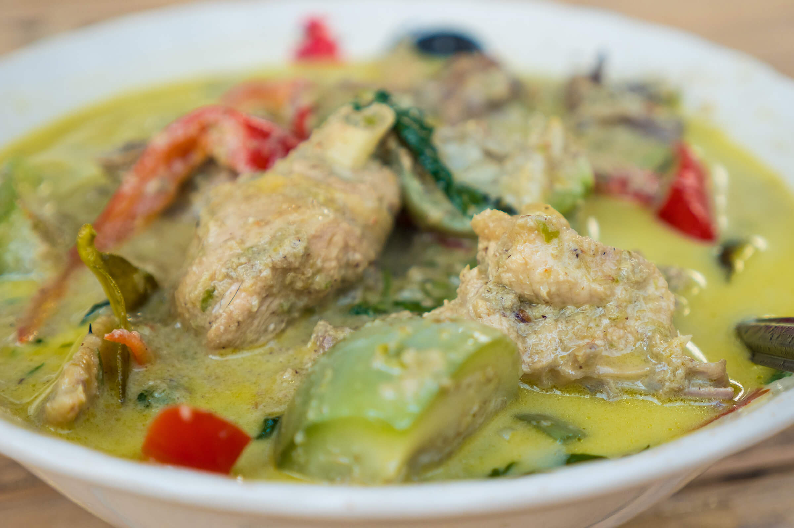

Authentic Green Curry Chicken

Description
Green curry chicken is a flavorful Thai dish that balances spicy, sweet,
and savory elements. It combines tender pieces of chicken with fresh
vegetables, simmered in a creamy coconut milk base infused with aromatic
green curry paste, lemongrass, and kaffir lime leaves. The dish is
typically served with jasmine rice, offering a rich and fragrant meal.
Perfect for those seeking a blend of heat and freshness, this recipe
captures the essence of traditional Thai cuisine.
Thai households traditionally use fresh ingredients to make curry paste
from scratch, pounding them in a mortar and pestle. If you want to skip
this step, you are welcome to use green curry paste from your local
supermarket (my favourite is volcom brand, ayam is also a good option)
Thai Green Curry Ingredients
- For the Green Curry Paste
- 10 Thai green chillies (adjust for your heat preference)
- 2 shallots, chopped
- 4 cloves of garlic
- 1-inch piece of galangal (or ginger), sliced
- lemongrass stalk, finely chopped
- Zest of 1 kaffir lime (or 1 tsp of lime zest)
- 1 tsp of roasted coriander seeds
- 1 tsp of roasted cumin seeds
- 1 tsp of shrimp paste (optional)
- 1 tsp of salt
- 1 bunch of fresh cilantro stems
- 1 tsp white peppercorns (optional)
- 1 tbsp vegetable oil (to blend)
- For the Curry
- 800g chicken thigh, cut to your preference
- 400ml (1 can) of coconut milk
- 400ml (1 can) of coconut cream
-
2 tbsp of green curry paste (if store bought read instruction on the
label)
- 2 tbsp of fish sauce
- 1 tbsp of palm sugar
- 2 cups of Thai eggplants
- 1 cup of snow peas
- 5-6 kaffir lime leaves, torn
- 1-2 fresh chillis (optional for your heat preference)
- 1 cup thai basil leaves
- 1 cup of bamboo shoots (optional)
- 1 tbsp vegetable oil
- Jasmine rice (for serving)